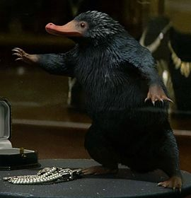
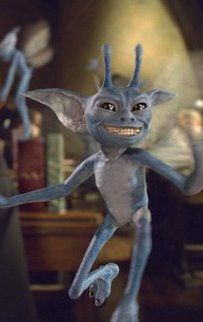

Animais Fantásticos
- 
- 

Occami
É uma criatura bípede emplumada e com asas, possui um corpo parecido com o de uma serpente com cabeça de pássaro, eles podem chegar até quadro metros e meio de altura. O Occami é extremamente agressivo a qualquer um que se aproxime dele, sua dieta consiste basicamente de ratos, pássaros, e, ocasionalmente, macacos. É muito protetor quando se trata de seus ovos, da qual é feita da mais pura e delicada prata. É encontrado no extremo oriente e na Índia.
O Occami é conhecido por ser choranaptyxic, o que significa que ele cresce ou encolhe na mesma proporção do espaço disponível
Testrálio
Um Testrálio é uma raça de cavalos alados com um corpo esquelético, rosto com características de répteis, asas de couro que se assemelham a um taco. Eles são muito raros, e são considerados perigosos pelo Ministério da Magia.
Testrálios são, imerecidamente, conhecidos como presságios de infortúnio e agredidos por muitos bruxos, porque eles são visíveis apenas para aqueles que testemunharam a morte pelo menos uma vez (e plenamente aceitaram o conceito) ou devido ao seu aspecto sombrio e aparência fantasmagórica.
Pelúcio
O Pelúcio (Niffler) é uma criatura com um longo focinho e um casaco de pele negra e fofa. Eles eram atraídos por coisas brilhantes, o que os tornava maravilhosos para localizar aquelas coisas safadas que fomos amam, mas isso também significa que eles poderiam causar estragos se fossem mantidos (ou soltos) dentro de casa. Os pelúcios em geral são inofensivos
Seminviso
O Seminviso (Demiguise) é uma criatura herbívora pacífica que pode se tornar invisível e dizer o futuro, o que torna muito difícil de pegar. Ele é encontrado no Extremo Oriente, mas apenas bruxos e bruxas treinados em sua captura podem vê-los. Assemelha-se a um macaco com grandes olhos negros e longos pelos sedosos.
Diabrete da Cornualha
O Diabrete da Cornualha é um pequeno (cerca de 30 centímetros de altura) e brilhante produtor de travessuras e adora truques e brincadeiras. É capaz de voar, e gosta de levantar as pessoas pelas orelhas e depositá-las no topo das árvores e edifícios, mostrando uma força incrível para criaturas do seu tamanho.
Diabretes da Cornualha só podem se comunicar com outros diabretes ; suas vozes são descritas como "tão estridentes como ouvir muitos brigões".
Basilisco
O Basilisco é uma serpente gigante, também conhecida como o Rei das Serpentes. É uma criatura criada pelos Bruxos das Trevas. Herpo, o Sujo foi o primeiro a criar um basilisco. Ele conseguiu isso ao chocar um ovo de galinha por baixo de um sapo que resultou na criatura conhecida como Basilisco. A criação de basilisco foi proibida nos tempos medievais. A prática pode ser escondida quando o Departamento para Regulamentação e Controle das Criaturas Mágicas for verificar simplesmente removendo o ovo do sapo.
Olhar um Basilisco diretamente nos olhos matará imediatamente a vítima, mas o contato indireto apenas os tornará petrificados. É também o inimigo mortal das aranhas, que podem intuitivamente senti-las e fogem sempre que o fazem
FAQ
- Qual a idade dos animais?
- As raposas são animais mamíferos e onívoros pertencentes à família Canidae. São vulpídeos de porte médio, caracterizados por um focinho comprido e uma cauda longa e peluda.
- Eles são fantásticos?
- Também apresentam como particularidade suas pupilas ovais, semelhantes às pupilas verticais dos felídeos.
- Qual a diferença?
- As raposas são animais mamíferos e onívoros pertencentes à família Canidae. São vulpídeos de porte médio, caracterizados por um focinho comprido e uma cauda longa e peluda.
- Como proteger?
- Também apresentam como particularidade suas pupilas ovais, semelhantes às pupilas verticais dos felídeos.
Contato
- animais@fantasticos.com.br
- +55 (81) 99999-9999
- Rua Navegantes, N.255, Recife - PE